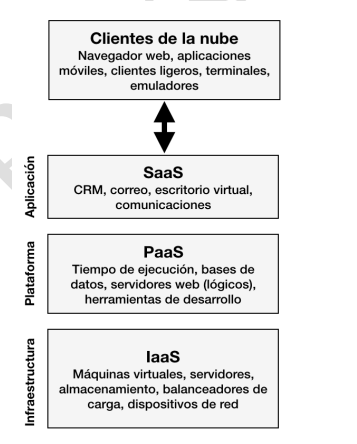
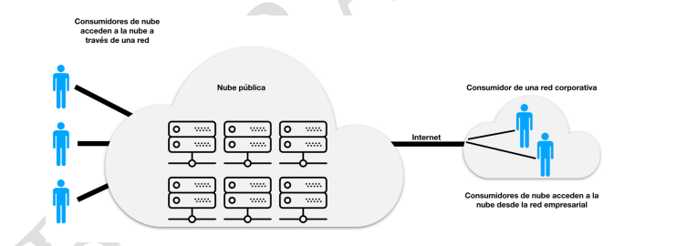
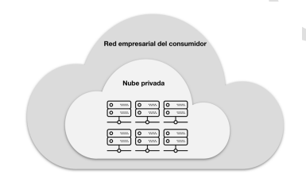
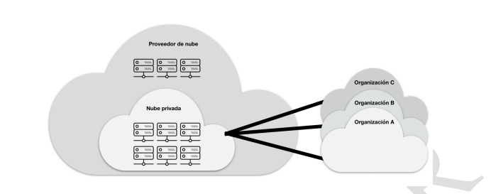
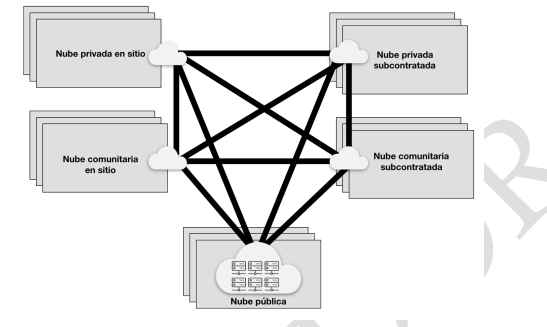

Los modelos de servicio en la nube definen cómo se entregan los recursos y aplicaciones a los usuarios:
Ventajas: reducción de costos, escalabilidad, flexibilidad y acceso remoto.
Desafíos: seguridad, privacidad, dependencia del proveedor e integración con sistemas existentes.




